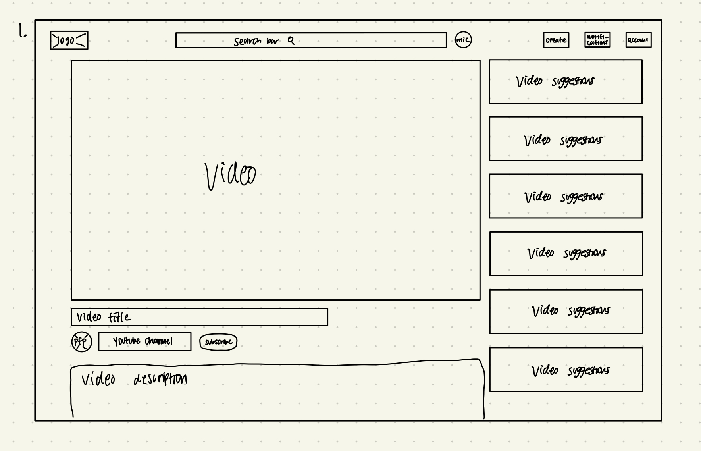
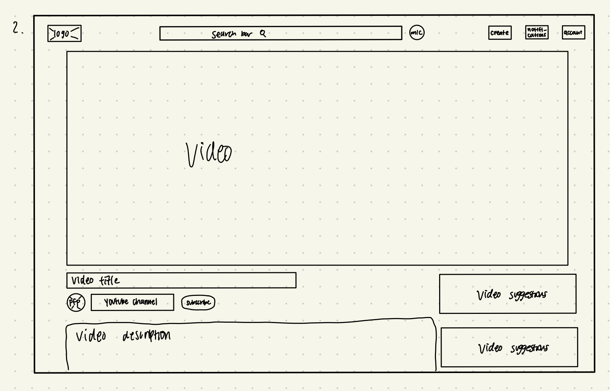

-
Using the favorite website you chose in homework 1, create a wireframe for one page of it using pen/paper, PowerPoint, or any your tool of choice. (use the 'img' tag!) Make sure to let us know what the name of your website is (Use the 'p' tag!)

-
Try to improve the website you've chosen, and create a redesigned wireframe of one page for the same website using the principles of visual hierarchy that you learned from the article.

-
What is the goal of the website? Who is it intended for? How does the design accomplish this? Write 2-3 sentences answering these questions. (Use the 'p' tag again!)
The goal of this website is to allow users to upload videos for other users to watch and comment on. People can also gain a following by getting subscribers. The design of the website focuses the users attention on the video and immediately after highlights the channel and more information about the video.
-
Write 2-3 sentences about what problems your redesign addressed, and how it solved them.
My redesign addresses the problem of distraction. It focuses even more attention to the current video being viewed by allowing it to take up more space on the screen. Sometimes I get distracted by suggested videos and what I may want to watch later. With more of the video on the screen, I'm less inclined to search for more videos to watch until after I've finished the video I'm on.
NOTE: Make sure to include the wireframe images in the website and don't just put it in your assets folder!
Your wireframes should look something like this: